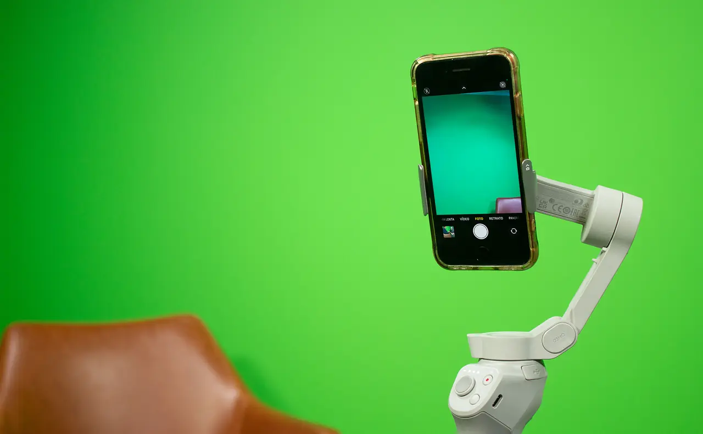
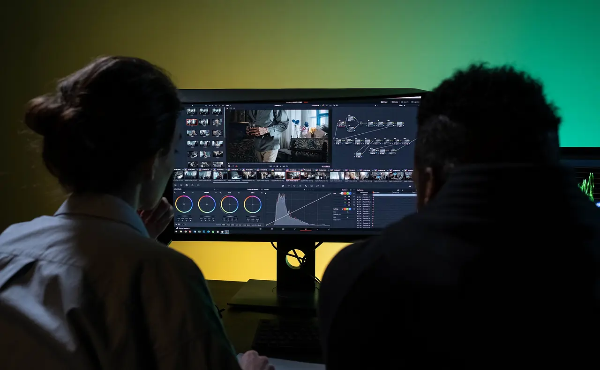

Edit video
Tự edit video bằng CapCut hay thuê editor? Cách chọn theo thời gian, chất lượng và bản quyền
CapCut giúp ai cũng có thể dựng video trên điện thoại, nên nhiều chủ shop tự hỏi có cần thuê editor nữa không. Câu trả lời phụ thuộc vào thời gian của bạn, loại video và những rủi ro bản quyền ít người để ý.

Nên tự edit video bằng CapCut khi video đơn giản, cần đăng nhanh mỗi ngày và bạn có thời gian học, làm đều. Nên thuê editor khi video dùng để chạy quảng cáo, cần chất lượng đồng đều, cần nhiều tỷ lệ khung hình hoặc thời gian của bạn đáng giá hơn số giờ ngồi dựng. Nhiều doanh nghiệp nhỏ chọn cách kết hợp: tự quay, tự dựng video hằng ngày, thuê editor cho video quan trọng.
Bài này giúp bạn quyết định dựa trên ba yếu tố: chi phí thời gian, chất lượng và bản quyền nhạc, phông chữ, kèm một quy trình kết hợp làm được ngay. Nếu bạn đã nghiêng về việc thuê và muốn biết giá, đọc bài thuê edit video bao nhiêu tiền.
Khi nào tự edit video là hợp lý
CapCut và các ứng dụng tương tự có sẵn mẫu, phụ đề tự động, hiệu ứng chuyển cảnh, đủ cho rất nhiều loại video. Tự làm hợp lý khi:
- Video mang tính tức thời: hàng mới về, livestream cắt lại, trả lời câu hỏi khách, hậu trường. Cần đăng trong ngày, không đáng để chờ người khác dựng.
- Phong cách đơn giản, lặp lại: một người nói trước máy, chèn phụ đề, nhạc nhẹ.
- Bạn hoặc nhân viên thích làm và có thời gian đều đặn. Kỹ năng dựng tiến bộ khá nhanh nếu làm mỗi ngày.
- Đang thử nghiệm nội dung. Khi chưa biết kiểu video nào hợp với kênh, tự làm nhiều bản thử rẻ hơn thuê.
Ví dụ minh họa: một tiệm bánh nhỏ ở Đà Nẵng mỗi sáng quay mẻ bánh mới ra lò, dựng 15 giây bằng mẫu có sẵn trên điện thoại rồi đăng trước giờ mở cửa. Loại video này cần nhanh hơn cần đẹp, tự làm là hợp lý. Đây là ví dụ để hình dung, không phải khách hàng thật.

Khi nào nên thuê editor
- Video chạy quảng cáo trả phí. Bạn trả tiền cho mỗi lượt hiển thị, nên vài giây mở đầu, nhịp cắt và chất lượng hình đều ảnh hưởng trực tiếp đến hiệu quả chi tiêu.
- Video đại diện thương hiệu lâu dài: giới thiệu doanh nghiệp, video trên website, video gửi đối tác.
- Cần nhiều phiên bản từ một video: bản dọc, vuông, ngang, bản 15 giây và 30 giây.
- Footage nhiều, cần người biên tập nội dung: hội thảo, phỏng vấn, sự kiện dài.
- Cần âm thanh, màu sắc chuyên nghiệp: lọc ồn, cân giọng, chỉnh màu đồng nhất giữa các cảnh quay khác thời điểm.
- Thời gian của bạn dành cho việc khác mang lại nhiều hơn: bán hàng, chăm sóc khách, phát triển sản phẩm.
Chi phí thời gian: cách tự tính
"Tự làm thì miễn phí" là cách nghĩ dễ gây hiểu lầm. Bạn không trả tiền cho editor, nhưng trả bằng giờ làm của chính mình hoặc nhân viên. Hãy tự đo trong một tuần:
Chi phí tự làm mỗi tháng = số video mỗi tháng × số giờ dựng mỗi video × giá trị một giờ làm của người dựng + chi phí công cụ trả phí (nếu có).
Giá trị một giờ làm có thể tính bằng lương chia số giờ, hoặc với chủ doanh nghiệp, bằng doanh thu bạn có thể tạo ra nếu dùng giờ đó để bán hàng. So con số này với giá thuê dựng cùng số video. Đừng quên thời gian học: tuần đầu một video ngắn có thể mất cả buổi, vài tuần sau mới nhanh dần.
Một chi phí ẩn khác là sự không đều. Khi bận, việc tự dựng thường bị bỏ trước tiên, và kênh im lặng đúng lúc cần đăng nhất.
| Tiêu chí | Tự edit bằng CapCut | Thuê editor |
|---|---|---|
| Chi phí tiền mặt | Thấp, có thể chỉ phí gói trả phí của ứng dụng | Trả theo video hoặc theo tháng |
| Chi phí thời gian | Cao, nhất là giai đoạn học | Thấp, chủ yếu là viết brief và duyệt |
| Tốc độ đăng video tức thời | Nhanh, đăng trong ngày | Cần chờ theo lịch của editor |
| Chất lượng, độ đồng đều | Phụ thuộc người làm, dễ lệch khi bận | Đều hơn, có mẫu và quy trình |
| Âm thanh, màu sắc | Cơ bản | Lọc ồn, color grading, sound design |
| Nhiều tỷ lệ, nhiều phiên bản | Làm tay từng bản | Thường nằm trong gói |
| Rủi ro bản quyền nhạc, phông | Tự chịu, dễ dùng nhầm | Cần thỏa thuận rõ, bên làm có kinh nghiệm hơn |
Bản quyền nhạc và phông chữ: điều hay bị bỏ qua
Nhạc trong ứng dụng không phải lúc nào cũng dùng thương mại được
Theo thỏa thuận cấp phép tài nguyên của CapCut (bản tham khảo tại thời điểm viết, 11/2026), âm thanh trong thư viện được gắn nhãn dùng thương mại (Commercial) được phép dùng cho mục đích thương mại nhưng chỉ trên một số nền tảng nhất định như CapCut và TikTok; các âm thanh khác được xếp vào nhóm chỉ dùng phi thương mại. Khi một video trộn cả hai loại, video đó chỉ được dùng phi thương mại. Điều khoản có thể thay đổi theo thời gian và khu vực, nên hãy đọc bản hiện hành trước khi dùng cho video bán hàng hay quảng cáo.
Hệ quả thực tế: một bài nhạc thịnh hành dùng được khi đăng video thường trên TikTok chưa chắc dùng được khi đăng lại trên Facebook, YouTube hay khi chạy quảng cáo. Cách an toàn là dùng nhạc có giấy phép thương mại rõ ràng cho đúng kênh bạn đăng, hoặc xuất bản không nhạc rồi chọn âm thanh trong thư viện thương mại của từng nền tảng.
Phông chữ, mẫu, hình ảnh có sẵn
Phông chữ, mẫu (template), sticker, hình ảnh trong ứng dụng cũng có điều kiện sử dụng riêng. Phông có sẵn trên máy tính không mặc định được dùng cho mục đích thương mại. Với chữ thương hiệu xuất hiện lâu dài (tên shop, câu khẩu hiệu), nên dùng phông có giấy phép mở hoặc đã mua bản quyền, và dùng cùng phông đó trên mọi video để nhận diện đồng nhất.
Khi thuê editor, hỏi gì về bản quyền
- Nhạc lấy từ thư viện nào, giấy phép cho phép đăng trên những kênh nào, có chạy quảng cáo được không?
- Phông chữ dùng có giấy phép thương mại không?
- Hình ảnh, video chèn thêm (stock) lấy từ đâu?
- File dự án, mẫu phụ đề, intro có được bàn giao để dùng lại không?
Nếu tự làm, cần nắm tối thiểu những gì
Bạn không cần học hết mọi tính năng. Với video bán hàng ngắn, năm kỹ năng sau đã tạo ra khác biệt rõ:
- Cắt bỏ khoảng lặng và câu nói vấp để nhịp video gọn.
- Đặt câu mở đầu hấp dẫn trong vài giây đầu, kèm chữ trên màn hình.
- Phụ đề đọc được: chữ đủ to, có viền hoặc nền, tránh vùng bị giao diện ứng dụng che.
- Cân âm lượng: giọng nói luôn rõ hơn nhạc nền.
- Lưu một mẫu riêng gồm phông chữ, màu, đoạn kết có thông tin liên hệ để dùng lại cho mọi video.
Quy trình kết hợp: tự quay, thuê dựng
Đây là cách nhiều doanh nghiệp nhỏ dùng để có video đều mà không tốn quá nhiều thời gian. Bạn giữ phần chỉ mình làm được (hiểu sản phẩm, có mặt ở cửa hàng), giao phần tốn thời gian và cần kỹ năng (dựng, âm thanh, phiên bản) cho editor.
- Lên danh sách video cho cả tuần cùng một lúc: mỗi video một câu mở đầu và ý chính.
- Quay theo lô trong một buổi bằng điện thoại, quay dọc, đủ sáng, thu tiếng gần. Bài edit video TikTok, Reels bán hàng có hướng dẫn quay sao cho dễ dựng.
- Đặt tên và lọc footage, xóa đoạn hỏng, gửi file gốc qua Google Drive kèm ghi chú cảnh nên dùng.
- Editor dựng theo mẫu thống nhất: cùng kiểu phụ đề, màu, intro, câu kêu gọi cuối.
- Bạn duyệt một lần cho cả lô, góp ý theo mốc thời gian trong từng video.
- Tự dựng nhanh những video tức thời bằng CapCut, dùng chính phông chữ và màu trong mẫu editor đã làm để kênh vẫn đồng nhất.

Sai lầm thường gặp
- Lạm dụng hiệu ứng, chuyển cảnh có sẵn. Video trông giống hàng nghìn video khác và làm người xem mất tập trung khỏi sản phẩm.
- Tin hoàn toàn phụ đề tự động. Phụ đề tiếng Việt tự động hay sai dấu, sai tên sản phẩm; luôn đọc lại trước khi đăng.
- Dùng nhạc thịnh hành cho video quảng cáo mà không kiểm tra giấy phép.
- Thuê editor nhưng gửi footage nén qua tin nhắn. Chất lượng hình giảm, editor không cứu được.
- Đổi phong cách liên tục. Mỗi video một kiểu chữ, một tông màu khiến kênh thiếu nhận diện.
- Không đo kết quả. Dù tự làm hay thuê, hãy so thời gian xem và lượt nhắn tin giữa các video của chính kênh mình để biết cách nào hiệu quả hơn.
Chi phí thuê dựng tại Dream Labs
Nếu bạn chọn cách kết hợp tự quay, thuê dựng, Dream Labs dựng từ footage bạn gửi theo từng video. Gói Cơ bản 800.000đ/video cho video đến 60 giây gồm cắt ghép, nhạc nền, phụ đề, chỉnh màu cơ bản. Gói Chuyên nghiệp 2.000.000đ/video thêm phụ đề động, motion text, color grading và xuất 3 tỷ lệ 9:16, 1:1, 16:9 cho video đến 3 phút. Gói Cao cấp 5.000.000đ/video cho video quảng cáo hoặc video dài đến 10 phút, có kịch bản dựng, sound design và bộ 5 clip cắt ngắn.
| Gói | Giá | Thời gian | Bao gồm |
|---|---|---|---|
| Cơ bản | 800.000đ/video | 2 ngày4 vòng sửa | Video gọn gàng, có phụ đề để đăng đều đặn mà không mất thời gian tự dựng.
|
| Chuyên nghiệpPhổ biến nhất | 2.000.000đ/video | 3–4 ngày9 vòng sửa | Video giữ người xem tới cuối, dựng một lần dùng được cho TikTok, Reels và YouTube.
|
| Cao cấp | 5.000.000đ/video | 5–7 ngày18 vòng sửa | Video quảng cáo chỉn chu kèm 5 clip ngắn: đủ nội dung cho cả một chiến dịch.
|
Xem thêm tại trang dịch vụ edit video, trang edit video TikTok, Reels và bảng giá. Muốn thử một lô nhỏ trước, nhắn Zalo 0934 246 420 kèm vài đoạn footage và nơi bạn đăng. Nếu sản phẩm khó quay, cân nhắc video motion graphic thay cho cảnh quay.
Câu hỏi thường gặp
Chủ shop có nên tự edit video bằng CapCut không?
Nên, với video đơn giản cần đăng nhanh như hàng mới về, trả lời câu hỏi khách, hậu trường. Với video chạy quảng cáo hoặc đại diện thương hiệu lâu dài, thuê editor thường cho chất lượng đều hơn và tiết kiệm thời gian của bạn.
Nhạc trong CapCut có dùng cho video bán hàng được không?
Chỉ một phần. Theo thỏa thuận cấp phép của CapCut tại thời điểm viết, âm thanh gắn nhãn thương mại được dùng thương mại trên một số nền tảng nhất định, còn lại chỉ dùng phi thương mại. Hãy đọc điều khoản hiện hành và kiểm tra nhãn từng bài trước khi dùng.
Tự edit một video ngắn mất bao lâu?
Tùy kỹ năng và độ phức tạp. Người mới có thể mất vài giờ cho một video ngắn, sau vài tuần làm đều sẽ nhanh hơn nhiều. Hãy tự bấm giờ trong một tuần để có con số của chính bạn.
Thuê editor có cần tự quay không?
Dịch vụ edit là dựng từ footage bạn gửi, nên bạn cần tự quay hoặc thuê quay riêng. Quay bằng điện thoại vẫn dựng tốt nếu đủ sáng, quay đúng tỷ lệ và thu tiếng gần.
Có thể vừa tự làm vừa thuê không?
Có, đây là cách phổ biến: tự dựng video tức thời hằng ngày, thuê editor dựng video quảng cáo và video quan trọng theo lô, dùng chung phông chữ, màu và mẫu phụ đề để kênh đồng nhất.
Video tự dựng có chạy quảng cáo được không?
Được, nếu nội dung rõ, hình đủ nét và âm thanh, phông chữ có giấy phép phù hợp. Rủi ro hay gặp nhất là dùng nhạc không được phép dùng thương mại khiến video bị tắt tiếng hoặc từ chối.
Nguồn ảnh: ảnh bìa: Ron Lach / Pexels · ảnh 1: Javier Gonzalez / Pexels · ảnh 2: Ron Lach / Pexels. Ảnh dùng theo giấy phép miễn phí của Pexels, chỉ mang tính minh họa.
Bắt đầu cùng Dream Labs
Tự quay được nhưng không có thời gian dựng?
Gửi cho Dream Labs footage và số video muốn đăng mỗi tuần qua Zalo. Chúng tôi dựng theo mẫu thống nhất để bạn chỉ việc đăng.